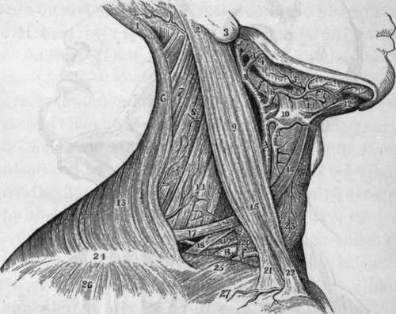
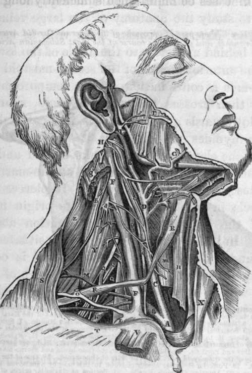

Second Or Superior Stage Of The Common Carotid Artery
Description
This section is from the book "Anatomy Of The Arteries Of The Human Body", by John Hatch Power. Also available from Amazon: Anatomy of the Arteries of the Human Body, with the Descriptive Anatomy of the Heart.
Second Or Superior Stage Of The Common Carotid Artery
In this stage the artery of each side lies close to the bodies of the cervical vertebrae, resting posteriorly on the longus colli muscle and sympathetic nerve: internally it is related to the larynx, pharynx, and thyroid gland : externally its relations are the same as in the inferior stage. In front it is covered by the integuments, pla-tysma myoides, and cervical fascia: the sterno-mastoid branch of the superior thyroid artery crosses it anteriorly, whilst the superior thyroid itself descends on a plane anterior and internal to it.
The common carotid artery will be found related to two triangularregions in the neck,—namely, the anterior inferior, and the anterior superior : the first is bounded internally by the middle line, which may be considered as the base; the two other sides are situated externally, —the lower side formed by the external origin of the sterno-cleido-mastoid muscle, and the upper by the anterior belly of the omo-hyoid; the apex is situated externally at the decussation between these two muscles. The carotid artery will be seldom found contained fairly within this triangular region; in an emaciated subject a small portion of the vessel may lie within it, corresponding to the apex; but in a muscular subject the artery lies under cover of the sterno-mastoid muscle, until it has passed into the anterior superior lateral triangle. This latter space is bounded superiorly by the posterior belly of the digastric and the stylo-hyoid muscles; this may be considered the base: externally by the sterno-mastoid muscle, and internally by the anterior belly of the omo-hyoid : the apex is situated inferiorly at the point of separation between these two muscles.
It would appear from the preceding account that the trunk of the common carotid artery may be effectually compressed against the spinal column, so as to prevent hemorrhage in case of a wound of the trunk or its branches. Such pressure, however, could not in a great majority of cases be maintained sufficiently long in consequence of the great suffering produced by pressure on the adjacent nerves; still it is often of the greatest importance to know a means of arresting the flow of blood, until the surgeon shall be in attendance to perform the operations of tying the wounded artery.
Fig. 7. Dissection to show part of the course of the External Carotid Artery, of some of its branches, and part of the course of the right Subclavian Artery.
1, Occipital portion of Occipito-frontalis- Muscle. 2. Insertion of Sterno-mastoid Muscle—aponeurotic connection between it and Trapezius removed. 3, Lobe or Lobulus of the Ear. 4. Ramus of the lower jaw. 5, Masseter Muscle. 6, Upper portion of Trapezius Muscle. 7, Splenius Muscle. 8, Levator Anguli Scapulae. 9, Sterno-mastoid. 10, Great Cornu of the Os-hyoides,—the Lingual Artery getting above it to pass deeper than the Hyo-glossus Muscle. 11, Mylo-hyoid Muscle. 12, Anterior belly of Digastric Muscle—the posterior has been removed. 13, Lower part of Trapezius. 14, Scalenus Medius and Posticus. 15. Relation between the Omo-hyoid and Sterno-mastoid Muscles. 16, Anterior belly of the Omohyoid. 17. Posterior belly of Omohyoid. 18, One of the Nerves of the Brachial Plexus. 19. Posterior Scapular Artery given oft" in this case by Subclavian Artery behind Anterior Scalenus. 20, Anterior Scalenus Muscle. 21, Portion of clavicular origin of Sterno-mastoid. 22, Sternal origin of Sterno-mastoid Muscle. 23. Thyroid Gland. 24, Aponeuiotic junction between the Trapezius and Deltoid Muscles. 25, Clavicle. 26. Deltoid Muscle. 27, Small Arterial twig. Lower A. Bifurcation of Common Carotid Artery. Upper A, External Carotid Artery. B, Subclavian Artery after having passed behind the Anterior Scalenus Muscle, a. Superior Thyroid Artery, b, Facial or External Maxillary Artery: Submaxillary Gland removed. The Inferior Palatine Artery is seen behind b. c, Interior Mental or Sub-mental Artery, d, Transversalis Faciei Artery, e. External Carotid near its termination: lower part of Parotid Gland removed, f, Suprascapular Artery crossing the Anterior Scalenus Muscle.
Fig. 8. Dissection to show the relations of the Nerves, Arteries, and Veins of the right side of the neck.
A, Arteria Innominata. B, Subclavian Artery crossed by the Vagus Nerve. C, Common Carotid Artery having the Vagus Nerve to its outside. D. K, External Carotid Artery. F, F, Internal Jugular Vein crossed by branches of the Cervical Plexus, which join the Descendens Noni Nerve. G, Facial Artery. H, Occipital Artery in relation with Internal Jugular Vein, and Ninth Nerve. I, Superior Thyroid Artery. K, Subclavian Artery in relation with Brachial Plexus of Nerves. L, Part of Subclavian Vein lying on Scalenus Anticus Muscle. M. Transversalis Colli Artery. O. Union of External Jugular and Posterior Scapular Veins. P, Transversalis Humeri Artery. Q. Q. Q, Branches of Brachial Plexus of Nerves. R. R, Omo-hyoid Muscle. S. Trapezius Muscle, T, Clavicle. V. Clavicular origin of Sterno-mastoid Muscle. Y, Scalenus Posticus Muscle. Z, Sple-nius Muscle, a. Cervical Plexus assisting in forming the Phrenic Nerve which descends on the Scalenus Anticus Muscle, b. Spinal Accessory Nerve, which pierces the Sterno-mastoid Muscle, c. Internal Carotid Artery, with Descendens Noni Nerve lying on it. d, Vagus Nerve between the Carotid Artery and Internal Jugular Vein, e, Ninth Nerve, f. Lingual Artery passing under the Hyo-glossus Muscle, g, Mastoid portion of Sterno-mastoid Muscle, h, Genio-hyoid Muscle, i, Mylohyoid Muscle cut and turned forwards. 1, Internal Maxillary Artery passing behind the neck of the lower jaw. m, Sterno-thyroid Muscle cut across, n, Sterno-hyoid Muscle cut across, p, Sympathetic Nerve behind and between Carotid Artery and Jugular Vein, r, Parotid Duct.
Continue to: